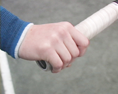
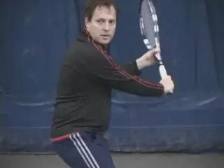
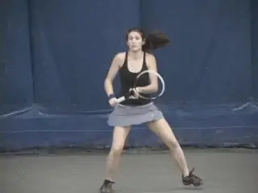
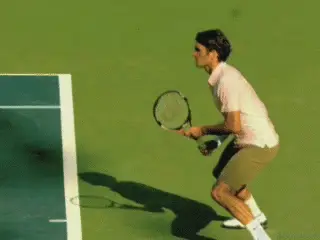
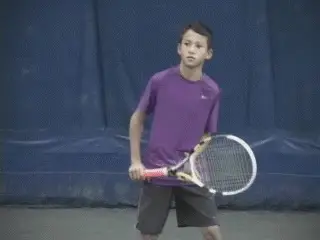
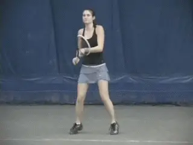
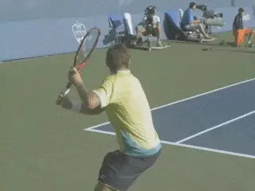

Previous: Practice, Practice, and Practice | 🏠 Classic Lessons Home | Next: Private Lessons - The Serve
Private Lessons:
Comprehensive unified tennis knowledge base — Fundamentals, Stroke Analysis, Reference Library, and more
Private Lessons:
Forehand Preparation
Scott Murphy
One universal problem I see when people come to my teaching court or camps is poor preparation on the forehand groundstroke. If this fundamental element is incomplete or poor it is likely the stroke will never reach its potential. Using pictures of some of the world's great pros as examples, let's examine the elements of sound forehand preparation.
Watching the Ball
Good preparation for any stroke starts with effective use of the eyes. Firstly, by using your eyes, you'll know when to make an all-important ready hop. Just before your opponent strikes the ball it's crucial to make a balanced ready hop. You want to try to time the landing of the hop so the feet touch the ground just as your opponent hits the ball. This will set your leg muscles to move one way or the other; knowing when to ready hop means you'll respond more quickly and accurately because you're assessing physical cues your opponent may be giving you just ahead of the ball leaving his racket.
Watch Agassi prepare with torso rotation first. The left arm extends across the body.
Using your eyes effectively is also critical in avoiding a problem I see constantly, the inability to establish the correct lateral distance from the ball. Players will actually place their bodies where their racquets need to be, in great part because they don't track the ball long enough or with a still enough head to avoid overreacting while establishing position. Keep your head still, your shoulders level, and watch the ball until you hear it hit your strings. There are two other means of establishing a better range of contact that will be mentioned momentarily.
Turning the Body
Once you've established the ball is coming to the forehand side, initiate a unit turn, or the "coiling" phase of the stroke. The hips, trunk, and shoulders, in that order, rotate back until the shoulders are sideways to the target. The racquet is actually the last part of this kinetic chain.

The wrist drops into the laid back position, with the elbow in, and the racket on the right side.
In conjunction with this turn, the non-racket arm moves across the body to form an approximately 90-degree angle with the plane of the shoulders. Most pros will keep the non-hitting hand on the racquet throat to help initiate the turn and ensure the position of the arm before letting go. The position of the non-racket arm can also assist in distancing yourself laterally from the ball. Keeping the ball at that arm's length will prevent crowding of the swing. Additionally, it helps assists overall balance and sets up a synchronization of the arms during the forward swing.
Just before the forward rotation of the shoulders, the wrist should be locked into a laid back position and the elbow should be bent and relatively tight against the body. At the same time, the racquet head should be in front of the plane of the shoulders.
Federer aligned and fully loaded with the back foot inside the ball.
Lastly, when fully prepared to swing forward, the back foot should be planted with the weight of the body loaded on the back leg. The position of the back foot should be to the inside of where the ball will be struck. This is yet another means to avoid crowding the shot. If the back foot is planted to the outside of the incoming ball you'll be right in its path, thereby causing you to pull your shot in an attempt to make room for the swing.
Now you're ready to pull the trigger. In the next article I'll talk about how to best utilize good preparation and complete the forehand ground stroke package.
Scott Murphy is from Marin County, California where he started playing tennis at age 5 in a family of tennis nuts. Both of his parents were major influences in his development. He also took lessons from Marin legend Hal Wagner and former top 10, Harry Roach. Scott is a graduate of the University of California at Berkeley where he played baseball and football but continued to work on his tennis game with renowned coach Chet Murphy.
He was the head pro at San Domenico/Sleepy Hollow Tennis Club for over 20 years. He also directed the Nike Tahoe Tennis Camp at the Granlibakken Resort for 10 years. Scott now teaches privately in Ross, Marin County and in the summer he directs the Tuscan Tennis Academy which he founded in Quarrata, Italy.
Check out Scott's website at scottmurphytennis.net
You can contact Scott directly at: scottmrph@yahoo.com
Additional figures (from header/footer of source docx):







Source: tennisplayer.net archive — Forehand Preparation.docx (John Yandell teaching library, 2002-2022). Extracted and rendered as HTML for Tennis Future Lab.